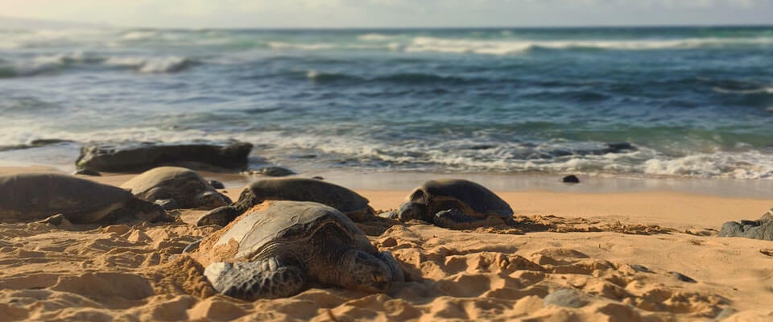
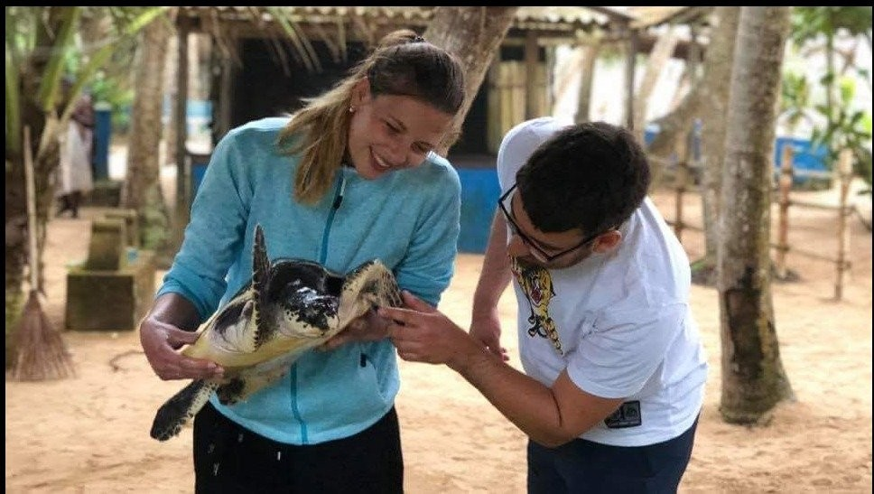

-

- Home
- Turtle Catgories
- Hikkaduwa Turtle Hatchery
- Threats to Turtles
- Other Turtle HatcheriesKosgoda Bentota
- Purchace and Donate
Hotspot for Turtle Hatcheries
Bentota is well-known for its turtle hatcheries, attracting a large number of visitors and researchers interested in sea turtle conservation. The region's warm sandy beaches provide good breeding grounds for a variety of sea turtle species, including green turtles and hawksbill turtles. The presence of many turtle hatcheries in Bentota demonstrates the community's dedication to safeguarding this endangered species. These hatcheries actively participate in the rescue and incubation of turtle eggs, assuring the survival of hatchlings. With their efforts, Bentota has become a turtle conservation hotspot, playing an important role in ensuring the survival of these unique marine species.
Species of Turtles Found at Kosgoda
The Bentota Turtle Hatchery in Sri Lanka actively engages the local population in conservation efforts and promotes environmentally friendly tourism practices. They work with residents to raise awareness about the need of turtle conservation and to include them in various programs. This type of community involvement develops a sense of ownership and responsibility for the protection of sea turtles and their ecosystems. The hatchery promotes sustainable tourism by educating visitors on responsible behavior and minimizing their environmental impact. They help local businesses by obtaining products and services from the neighborhood, which helps the area's socioeconomic development. The Bentota Turtle Hatchery assures the long-term survival of their conservation efforts while providing visitors with an enriching and environmentally conscientious experience by combining community involvement with sustainable tourism.
Visitor Experience and Community Involvement
Turtle hatcheries in Bentota are critical to the conservation of maritime habitats. These hatcheries help to the conservation of turtle populations by recovering turtle eggs and providing a safe environment for hatching. Turtles consume seagrasses, jellyfish, and other species as they grow, which helps to manage marine food webs. Furthermore, the presence of turtles in oceans contributes in the spread of nutrients via their mobility and nesting activities. Turtle habitat and population protection through hatcheries promotes the continuation of these biological processes, benefiting the general health and biodiversity of marine ecosystems in Bentota and beyond.